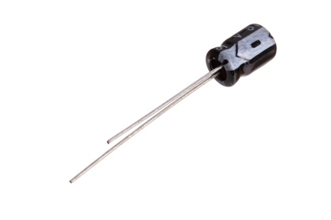
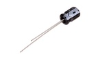
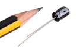

5 mm 100 uF Capacitor (Electrolytic) 16v - CEU100F

Summary
Name:
5 mm 100 uF Capacitor (Electrolytic) 16v
ID:
CAPE-05-X-UF100-VF
Hex ID:
CEU100F
WebPage:
https://github.com/oomlout/oomlout-OOMP/wiki/CAPE-05-X-UF100-VF
Short URL:
http://oom.lt/CEU100F
Revision History:
https://github.com/oomlout/oomlout-OOMP/blob/master/parts/CAPE-05-X-UF100-VF/
Type
Size
Color
Description
Index
CAPE
Capacitor (Electrolytic)
05
5 mm
X
UF100
100 uF
VF
16v
Images
 
About
This part is awaiting a description.
Specifications
Info
Value
Type
Capacitor (Electrolytic)
Size
5 mm
Description
100 uF
Index
16v
Number of Pins
2
Extra Details
Spotted a mistake, want to add more? Let us know
oomp@oomlout.com
All images and resources are licensed [CC BY-SA] unless otherwise stated (ie. the datasheets)